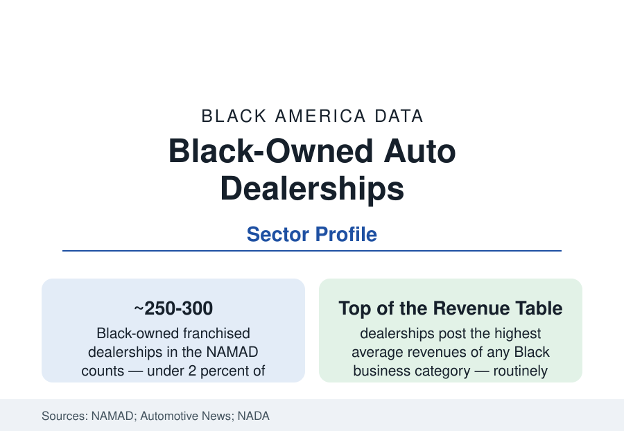

Black Business
Black-Owned Auto Dealerships: The High-Revenue Frontier
Auto dealerships are among the highest-revenue Black businesses in America — and among the most endangered by industry consolidation. The NAMAD and industry data.

No Black business category posts revenue like an auto dealership. A single franchised store grosses what a hundred restaurants do, and the largest Black dealer groups rank at the top of the Black Enterprise rankings year after year on nine-figure revenues. Yet Black dealers own under two percent of America's franchised dealerships in the National Association of Minority Automobile Dealers' counts — a few hundred stores — and the industry's consolidation is shrinking the door through which every one of them entered. This article reports the dealership data.
The Counts and the Economics
The franchised dealership population has consolidated for decades — from over 20,000 stores in the industry's dispersed era to roughly 16,000–17,000 roof tops today, increasingly grouped into regional and public chains — and the minority dealer counts tracked by NAMAD and Automotive News's census tell the Black story inside it: a few hundred Black-owned stores at the recent counts, down from a peak in the several hundreds in the 2000s before the financial crisis and the GM and Chrysler bankruptcies culled minority stores disproportionately (the bankruptcy dealer-termination lists of 2009 are the file's wound: minority dealers lost stores at rates their associations documented and litigated). The economics explain both the prize and the precarity: a dealership is a franchise allocation, not a business one simply opens — the manufacturer's approval, the floorplan financing, the facility requirements (image programs demanding multi-million-dollar rebuilds on the factory's schedule) make the dealer a capital-intensive tenant of the brand, and the average store's net margin (one to three percent of sales in the NADA data) is as thin as the revenue is vast.
The Entry System: Training Programs and Succession
Entry runs through the manufacturers' minority dealer programs — the dealer-development academies (GM's, Ford's, and others' candidate training pipelines, built substantially under the pressure and partnership of NAMAD's advocacy since its 1980 founding) that place trained candidates into stores with manufacturer financing support — and through succession inside existing stores (the general manager bought out, the family second generation). The program data are the file's core policy record: the development pipelines produced most of today's Black dealer population, their enrollment and placement numbers track the manufacturers' commitment cycles, and their shrinkage in the consolidation era is the succession question in institutional form. The used-car and independent sector beneath the franchise tier — thousands of Black-owned lots and the buy-here-pay-here segment — forms the ABS's broad base, at economics a world below the franchise tier's.
The EV and Agency-Model Disruption
The industry's current transformation writes the file's next chapter in three variables. The electric transition compresses the service-and-parts profit pool (EVs need less maintenance — the dealership model's back-end economics in question) and hands allocation power to new manufacturers (the EV startups' direct-sales fights with dealer laws state by state). The agency-model experiments abroad (factories selling at fixed prices, dealers as delivery agents) hover over the U.S. franchise system's legal architecture. And the consolidation economics — public groups and mega-privates buying stores at blue-sky multiples an independent cannot match — price the succession market against the second generation precisely where Black ownership is thinnest-capitalized. NAMAD's current agenda, in its published form, reads as the composite: allocation equity in the new brands, development-program restoration, and succession financing.
The Community Footprint
The dealership's community role is the sector's data footnote with outsized meaning: the Black dealer is typically among the largest Black employers and taxpayers in their market, the name on the youth-sports and scholarship infrastructure, the proof-of-scale exhibit in the local business data — and the franchise's personal nature (the dealer's name on the building) makes each store a civic institution in the city profiles' terms. The dealer associations' philanthropy and the NAMAD scholarship funds formalize the footprint. When a market loses its Black dealer, the business section of that city's data loses its largest single exhibit — a fact the termination-era communities documented in real time.
Reading the Dealership Data
Auto retail is Black business at maximum leverage: the highest revenues, the heaviest capitalization, the tightest dependence on a gatekeeper's allocation — a few hundred stores whose existence is a policy outcome renewed with every franchise decision. The counts' fragility is the story: no other sector of this revenue scale can be halved by one bankruptcy's termination list. The dealers who remain are, by the data's own arithmetic, among the most accomplished operators in American retail.
More in Black Business
Black-Owned Businesses: Counts, Receipts, and the Representation Gap
About 161,000 Black-owned employer firms and three million solo ventures: how the Census Bureau counts Black business ownership, where firms concentrate, and the gap between population share and business share.
Black Median Net Worth: The Wealth Gap in Federal Reserve Data
The Federal Reserve puts Black median family net worth at $44,900, against $285,000 for White families — about 16 cents on the dollar. The widest gap in economic data.
Black Buying Power: The $1.8 Trillion Consumer Economy
Black buying power is estimated at about $1.8 trillion — larger than the economy of most nations. What the figure measures, who produces it, and what it buys.
Source: National Association of Minority Automobile Dealers; Automotive News dealership census; National Automobile Dealers Association data; Census Bureau Annual Business Survey.